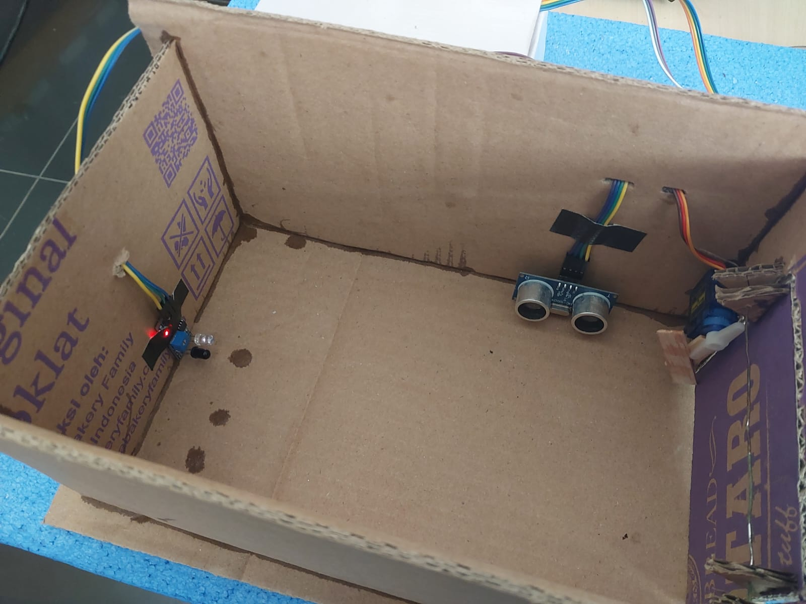

My Project
Implementation of IoT In Residence Gates
CEP CCIT – Faculty of Engineering, University of Indonesia ( 2023 )
- Designing sensor and actuator circuits such as Arduino Uno, RFID, Servo, LCD, LED.
- Making Flowchart.
- Program arduino according to the sensor and actuator circuit.
Smart Tilt Garage Monitoring With Node-RED
CEP CCIT – Faculty of Engineering, University of Indonesia ( 2024 )

- Designing Sensor and actuator circuits.
- Programming ESP32.
- Creating flow Node-RED and dashborad for realtime monitoring.
Home